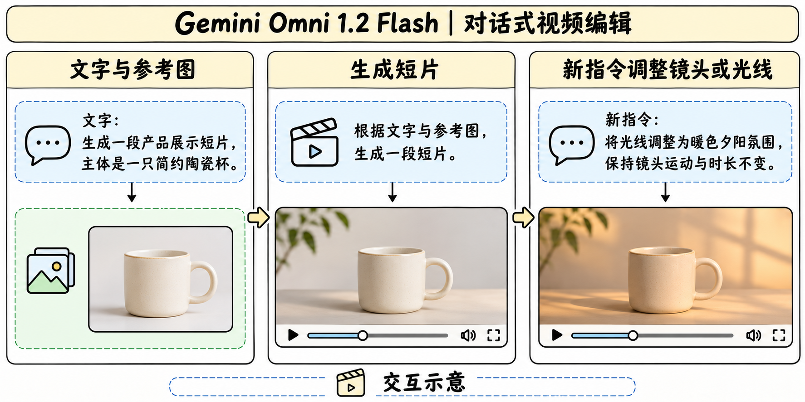

Gemini Omni Flash 家族
家族版本与发布
| 版本 | 官方证据 | 变化 |
|---|---|---|
| Omni Flash | 5 月 19 日 I/O 首发 | 从文字、图像、音频及视频输入生成带音频视频 |
| Omni 1.1 Flash | 8 月 27 日更新的家族模型卡 | 加强编辑控制与生产输出 |
| Omni 1.2 Flash | 新模型卡及独立 GA 型号 | 提升参考一致性、说话人表现与片段时长 |

生成、编辑与延展

API 文档给出的常规生成区间为 3–15 秒，首末帧条件为 3–10 秒。延展可添加 3–10 秒，接到输入视频末尾最多 30 秒的片段上。输出规格包含 360p、720p、1080p 和 4K，具体路径和功能以渠道为准。Cloud 博客把 360p/720p 用作草稿并描述后续高清化，音频参考需要 allowlist。
对话编辑可以只改光照或镜头运动并要求保留主体。这个交互可用分步验收拆开，先看首轮主体一致，再看二轮指定属性变化和非目标属性保留。跨回合重复采样有助于区分单次成功与稳定表现。
架构披露与安全
版本级训练配方、权重、规模和可复现消融尚未公开。官方列出参考跟随、语音自然度和主体一致性改进，缺少可横向对比的 1.2 分项成绩。编辑过程中可单独检查时序一致性、复杂运动、文字渲染与音画同步。输出带 SynthID，官方还限制更改人物语音的部分功能。
服务指标与资料边界
Google Cloud 公告给出 720p 视频每秒 0.07 美元，较 1.1 Flash 低约 30%。比较生产成本时还应计入失败重试、编辑轮数和高清输出路径。将完成时长与分辨率分别固定后，再测每条合格视频的实际费用。